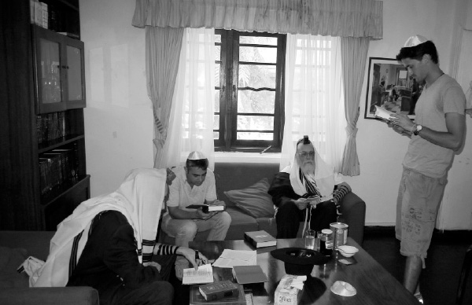

Tishrei on Shlichus - From a Father’s Perspective
R ’ Zev Crombie, who went with his wife to Sri Lanka in order to help their son and daughter-in - law who are on shlichus in this Moslem country, wrote a diary of his impressions .

We belong to the vast majority of Anash who enjoy living in an established Chabad community. We have regular minyanim, shiurim, kosher food, a mikva, farbrengens, and everything else that comprises the comfortable life of a Chassid. When we have the opportunity to see life on shlichus from up close, we are astounded by the daily mesirus nefesh that it requires.
In the army, soldiers serve in many different functions and only the elite serve in special units. Shluchim, are the Rebbe’s elite forces. They are on the front lines in a daily war to reveal Moshiach, and in order to accomplish this, their lives are vastly different than most of Anash and far less comfortable and convenient.
Our trip to Sri Lanka was because of a request that grandparents often get: could we please babysit the grandchildren? In Sri Lanka, there isn’t (yet) a Shifra and Puah organization. There isn’t even a good neighbor whom you can ask to watch the kids for half an hour. What is a mother to do when she is also the teacher and she has to go to the hospital to give birth? That is precisely why we flew all the way to Sri Lanka.
We brought about 100 kilograms of food products with us, most of which are daily fare for us, but for shluchim, especially for their children, are luxuries: milk products, cottage cheese, Bamba, potato chips, etc. All the things that a child can buy at a local grocery store in Crown Heights or in Tzfas are a reason for celebration for children on shlichus.
Even a simple thing like naming a baby becomes a big deal. Mendy and Talia really hoped to give a name on Shabbos and they made great efforts to arrange a minyan, but there was no minyan. There were nine people and the tenth did not show up. To go out to the street and look for a tenth man is quite a task in a city of millions of non-Jews.
They had no choice but to wait for Monday and to use the Internet for 770live. On Monday, when they got up to reading the Torah in 770 (we had davened Maariv already), we followed the reading. When they got up to the Mi Sh’Beirach for a new mother we heard the gabbai in 770 name the baby (it wasn’t a big surprise; her parents named her Chaya Mushka).
What about chickens for Yom Tov? What do you do when the problem is not the expense but endless complications? We, who are used to such conveniences in our Chabad community, don’t always appreciate what we have. In order to have chicken for Yom Tov, it is necessary to locate a shochet who will be willing to go to Sri Lanka and fly him in especially to shecht chickens. It is also necessary to arrange for a slaughterhouse, to buy hundreds of chickens, kasher them, store them, etc. After seeing how much effort and money are involved, you feel foolish about the things that annoy you. It’s all a matter of perspective.
Over the years, we grew accustomed to a pampered life so that sometimes we lose perspective. My work at a hostel for the severely handicapped people taught me to appreciate all those things we take for granted. When you care for people who cannot get from one place to another without asking someone to move them, who can’t eat without someone feeding them, who can’t even go to the bathroom on their own, you get a very different perspective on life. After caring for people like these and hearing someone sound off about trivialities, you ask yourself, doesn’t this person realize how fortunate he is with what he has? Why does he not realize that the difficulties he is talking about are really trivial?
The same is true after visiting shluchim and seeing what they have to contend with. You get a completely different perspective toward the problems that sometimes preoccupy people.
In their first years on shlichus, there was no mikva and in order to immerse before davening, Mendel brought a large water cistern (the kind they install on rooftops), and that is what he used each morning. After the murderous attack in Bombay, Mendel and Talia moved to a house surrounded by a wall with a guard at the entrance day and night (he has another important job – every day he sweeps the endless number of leaves that fall off the trees in the yard). Their private quarters are located on the upper floor of the house. The ground floor is used as the shul and Chabad house. The house has a spacious yard where Mendel built a mikva. It also serves the families of tourists. Now, immersing is far easier. It is still a primitive mikva that is built within a simple shed and in order to immerse you need a bit of acrobatics, but it is a major improvement. Mendel told us about a tourist who did not have children for a number of years and after immersing in his mikva, she had a son.
Only a few Jews live in Sri Lanka. Most of the people who frequent the Chabad house are Israeli tourists who hike through the magnificent jungles and surf on the gorgeous beaches. Or, they are businessmen from all over the world who come in search of good deals. One of the few Jews who lives in Sri Lanka is a woman who fled Germany after they took her father to the concentration camp in Dachau. Till today, she takes pride in being the only Jew in the world who is a citizen of Sri Lanka. Now, with the birth of Chaya Mushka, there is another Jew with Sri Lankan citizenship.
There was no minyan on Shabbos morning. Not for Mincha either. Then a car drove up with tourists who were returning from the beaches. Apparently they were a bit sheepish about showing up in a car on Shabbos, which is why they would not come in but sat outside on the porch. We looked out the window and saw four men. Inside, we were: Mendy, the shochet R’ Haronein, me and another two guests. Together we were nine.
Mendy repeated the story about the two holy brothers, R’ Zushe and R’ Elimelech, who were arrested and sat in jail. One of the brothers complained that he couldn’t even daven because of the bucket of waste that was in the center of the room. The other one said, the same One who commanded us to daven is the One who commanded us not to daven when there is a bucket of waste. Said Mendy, the same One who commanded that we should read from the Torah said not to read if there is no minyan.
When Shabbos was nearly over, the guests overcame their reticence and came in, and they were five! We excitedly took out the Torah and read the sidra, hurrying to finish by nightfall.
On Sunday morning, we woke up early for a long trip to the slaughterhouse located somewhere in the jungle. Mendy uses this place, since it is the only one in Sri Lanka that allows him to shecht there. R’ Haronein of Kfar Saba came to shecht with great mesirus nefesh. He left whatever he was doing in order to help with the sh’chita out of true Ahavas Yisroel.
It was long and exhausting, and the following night all I could think of was slaughtered chickens. We returned when it was already dark and found the Chabad house full of tourists who packed the house and porch. They formed a minyan and R’ Haronein farbrenged with them until late at night.
Obtaining milk in Sri Lanka is another complicated venture. In order for the children to have milk, they need to go to a farm to supervise the milking. The farm is in one of the suburbs of Colombo, in a poor neighborhood. There are only four cows and the owners live on the farm. As Mendy described their lives on the farm, there is no advantage for the humans over the animals! Since all the cows together provide only about twenty liters of milk each time, it is necessary to go there every week or two to replenish the supply.
Tourists show up at the Chabad house throughout the day and night. Although most of them wear shorts and undershirts, have long hair, and earrings etc. nearly all of them happily accede to the request to put on t’fillin. It is almost certain that if we would meet them in Eretz Yisroel and suggest that they put on t’fillin, they wouldn’t even acknowledge us. Here, in a foreign land, they are incredibly receptive. Girls wrap shawls around themselves when they come to the Chabad house and join the shiurim.
A tourist calls from one of the distant beaches and says they are a number of Israelis who will be celebrating Rosh HaShana on the beach. She asked Mendy to send them wine and challos with someone, so that at least they would be able to make Kiddush. Another tourist, with a long ponytail, would be observing the holiday in a town in the mountains and so he sat with Mendy in order to write down the order of the t’fillos for Rosh HaShana.
All the hardships take on a different slant Erev Rosh HaShana, when dozens of guests arrive for davening and Yom Tov meals. Many guests are tourists taking a break in order to celebrate Yom Tov. Some of them know the t’fillos and some of them have apparently never opened a Siddur. There were also businessmen and employees at the embassies, some of whom are married to non-Jews. Yet, they each felt something that motivated them to come on this day to be with their fellow Jews.
When Mendy began davening Maariv with the moving tune that is used wherever Anash live, and I saw the astonishing mix of Jews all around me, I could not help but be amazed by it all.
The same was true when we sat down to the Yom Tov meals, and the next day at the davening, the shofar blowing, Musaf and Tashlich. To think that all these dozens of Jews got to daven and hear the shofar … Even the next day, when we were only nine men and we had no minyan and Torah reading, these Jews still got to daven the Rosh HaShana davening and hear the shofar.
The lives of shluchim are not easy. They follow the path of the frogs during the Plague of Frogs. When Hashem struck Egypt with frogs, He did not designate where each frog should go. Some frogs did their mission in Pharaoh’s bed and some entered the ovens …
We salute the shluchim, especially those who are not fazed by the hardships and go on shlichus to forsaken places. Let us give them our support!
Crombie. "Tishrei on Shlichus - From a Father’s Perspective." Beis Moshiach, no. 894 (August 27, 2013).